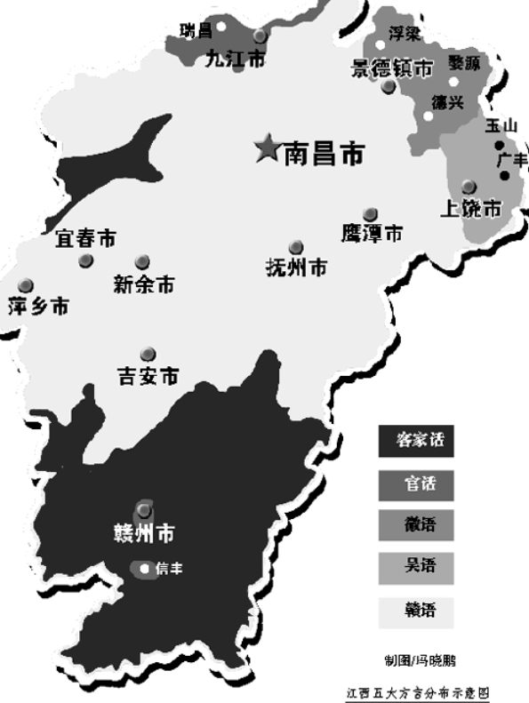

一、南昌话的“血统”
戴师傅说：“我们南昌话不是官话，是赣语，你们萍乡话也是赣语，但调子不一样。”后来我查了资料，南昌话属于赣语昌都片，是赣语的代表方言之一。赣语全国使用人口大概四五千万，主要在江西和湖南东部。
南昌话保留了很多古汉语的特征，比如入声、古词。戴师傅随口说了几个：“筷子叫箸子，午饭叫昼饭，晚饭叫夜饭。”他问我萍乡话怎么说，我说萍乡也说箸子、昼饭，但发音不同。他笑：“那我们是远房亲戚。”
还有一个有意思的地方：南昌话里骂人有时候用“嬲”，但语气不同意思差别很大，戴师傅让我别乱用。

图：南昌方言主要分布区域 示意 — 图片来自网络，仅为示意
✍️ 查资料才知道，南昌话的入声保留很完整，比如“百、北、别”都是短促音。可惜我耳朵听不太出来差别。